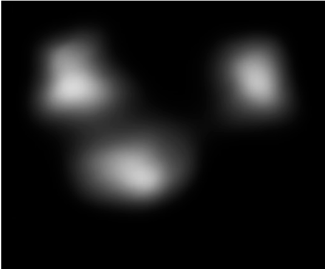

Saliency in Diffusion - Interactive Results
Anonymous authors
CVPR 2024 Submission - Paper ID: 14028
Saliency is influenced by contrast, brightness, and color as evidenced by cognitive studies on human visual attention. Our work involves controlled edits to these photometric properties, allowing us to control and interpret the model's saliency prediction in response to such edits. We focus on photometric edits that enhance the saliency of the most salient region that corresponds to a word from the prompt. We provide two examples for each edit in the following sections. Please use the sliders on the right to see the generated image edits and their saliency maps.
Contrast
We show the edited images at different intensity levels for enhancing contrast on the left and their corresponding saliency predictions on the right.
Using our method, we amplify the contrast of the object that man is holding in the image below. Observe the shift in saliency towards the region with high contrast. Our model is able to enhance saliency on the edited region.
Contrast
We show the edited images at different intensity levels for enhancing contrast on the left and their corresponding saliency predictions on the right.
Using our method, we can amplify the contrast of the dog in the image below. Although the items on the desk remain salient, the dog gathers more attention as the edit intensity increases.
Brightness
We show the edited images at different intensity levels for enhancing brightness on the left and their corresponding saliency predictions on the right.
We enhance the brightness of the cat in the image below. Note that, the attention shifts towards the brighter regions which aligns with our edited regions.
Brightness
We show the edited images at different intensity levels for enhancing brightness on the left and their corresponding saliency predictions on the right.
We amplify the brightness of the pizzas in the image below. Although the pizzas remain salient, we show the saliency of the bottle on the left and the glass in the middle decrease.
Color Editing
We show the edited images at different intensity levels for changing the color of the selected region to pink on the left and their corresponding saliency predictions on the right.
Using our method, we change the color of the toy sitting on the chair in the image below. The attention on the face of the toy increases parallel to the edited color intensity.
Color Editing
We show the edited images at different intensity levels for changing the color of the selected region to green on the left and their corresponding saliency predictions on the right.
We change the color of traffic lights to green in the image below. Observe that, the saliency disperses towards the edited region.
Applications of our method
We show the edited images at different intensity levels for enhancing contrast of the selected region to green on the left and their corresponding saliency predictions on the right.
We show a practical application of our model in the field of advertising, particularly in enhancing the visual appeal of products. Consider an advertisement featuring a hamburger alongside fries. Using our model, we can selectively increase the contrast on the hamburger, drawing more attention to the edited region. Assessing the saliency of such generated image edits in capturing viewer attention would require user studies which are costly and time-consuming. However, our method simultaneously produces the saliency map as we generate the image edit. This immediate feedback allows advertisers to fine-tune their image edits in real time, ensuring that the focal product, like the hamburger in this scenario, stands out from other elements, such as the fries. Hence, we enable advertisers to make data-driven decisions about visual edits, optimizing the impact of their advertisements without the need for time-consuming user studies. This not only streamlines the process of creating visually compelling advertisements but also enhances the likelihood of capturing and retaining consumer attention.

